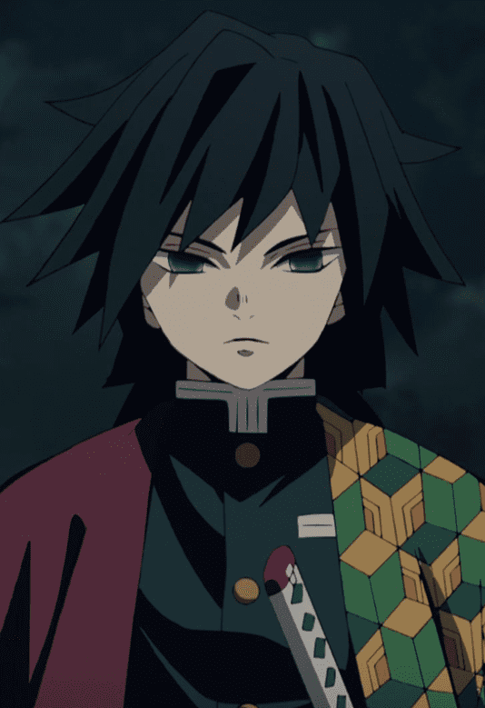
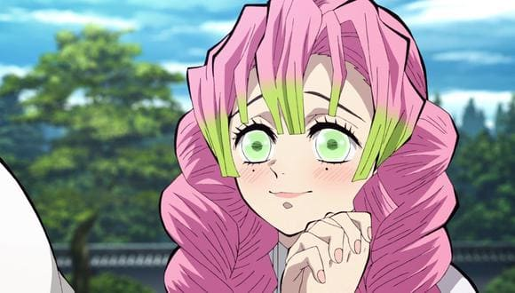
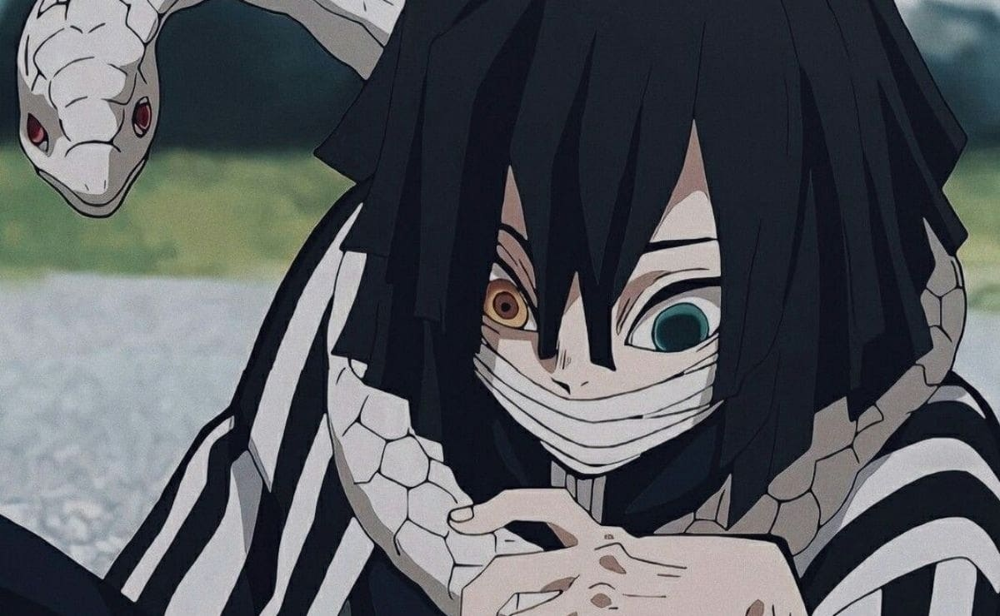
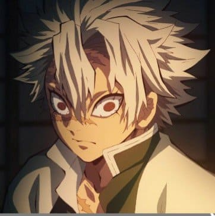
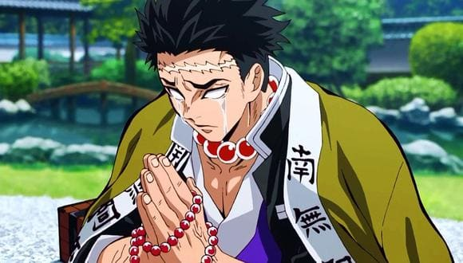
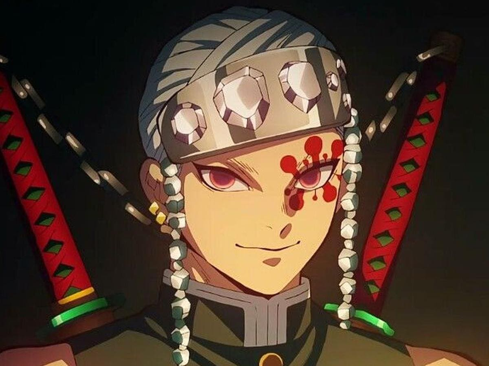
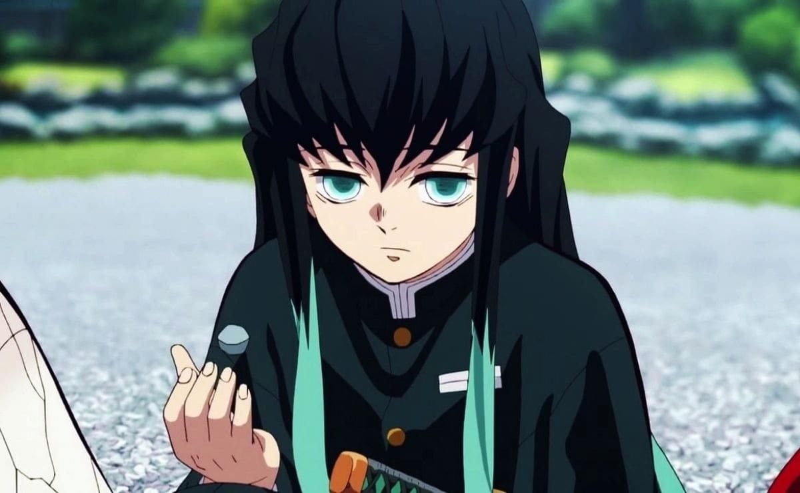
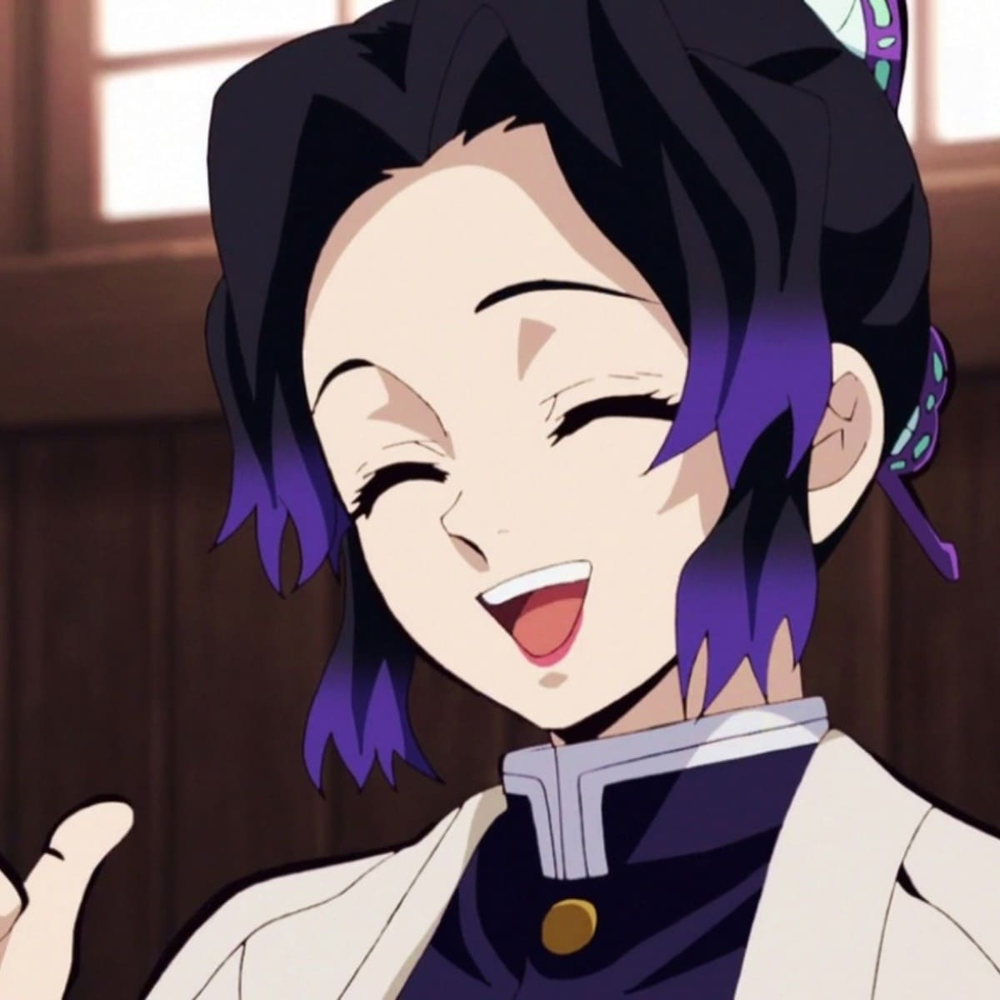

Pilares
-

Giyu Tomioka
Giyu Tomioka (冨とみ岡おか 義ぎ勇ゆう, Tomioka Giyū) fue un cazador de demonios perteneciente al Cuerpo de Exterminio de Demonios y Pilar del Agua (水みず柱ばしら, Mizu Bashira).
-

Mitsuri Kanroji
Mitsuri Kanroji (甘かん露ろ寺じ蜜みつ璃り, Kanroji Mitsuri) es una Cazadora de Demonios que formó parte del grupo de los Pilares siendo conocida como el Pilar del Amor (恋こい柱ばしら, Koi Bashira).
-

Obanai Iguro
Obanai Iguro (伊い黒ぐろ小お芭ば内ない, Iguro Obanai) es un Cazador de Demonios, miembro de los Pilares siendo conocido como el Pilar de la Serpiente dentro del Cuerpo de Exterminio de Demonios.
-

Sanemi Shinazugawa
Sanemi Shinazugawa (不死しなず川がわ 実さね弥み, Shinazugawa Sanemi), hermano mayor de Genya, es uno de los Cazadores de Demonios más fuertes y ágiles, destacando así dentro del grupo de élite como un Pilar siendo el actual Pilar del viento (風かぜ柱ばしら, Kaze Bashira).
-

Gyomei Himejima
Gyomei Himejima (悲ひ鳴め嶼じま 行ぎょう冥めい, Himejima Gyōmei) fue un cazador de demonios perteneciente al Cuerpo de Exterminio de Demonios y Pilar de la Roca (岩いわ柱ばしら, Iwa Bashira).
-

Tengen Uzui
Tengen Uzui (宇う髄ずい 天てん元げん, Uzui Tengen) es un Cazador de Demonios y el antiguo Pilar del sonido (音おと柱ばしら, Oto Bashira) del Cuerpo de Exterminio de Demonios.
-

Muichiro Tokito
Muichiro Tokito (時とき透とう 無む一いち郎ろう, Tokitō Muichirō) fue un Cazador de Demonios que ocupo el puesto de Pilar de la Niebla.
-

Shinobu Kocho
Shinobu Kocho (胡こ蝶ちょうしのぶ, Kochō Shinobu) fue una Cazadora de Demonios que se desempeñaba como uno de los Pilares; ella ocupó el puesto como el Pilar del Insecto (蟲むし柱ばしら, Mushi Bashira).